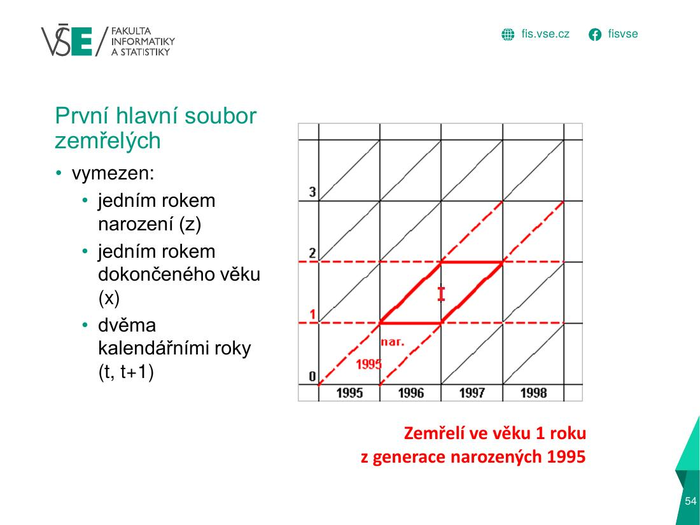
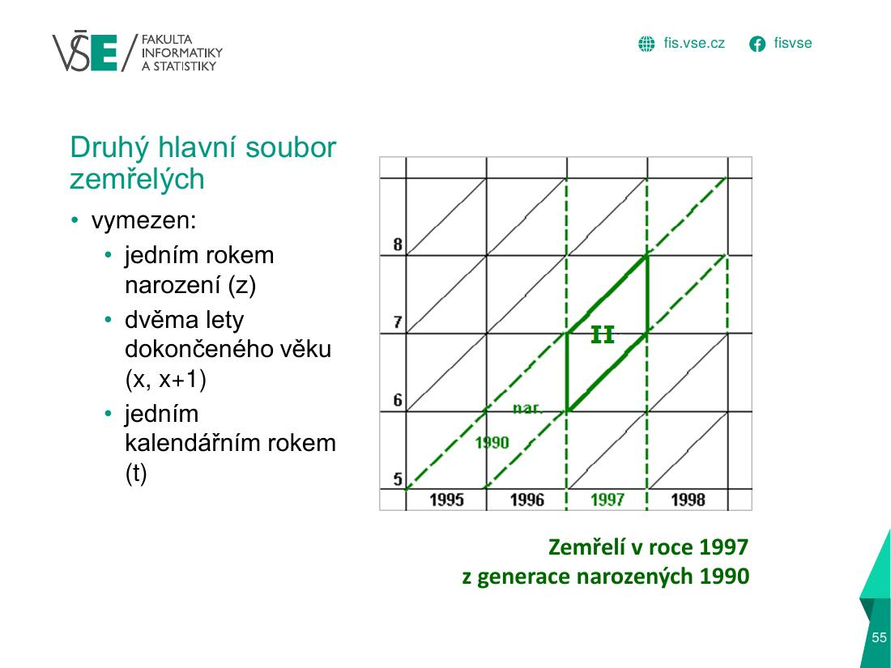
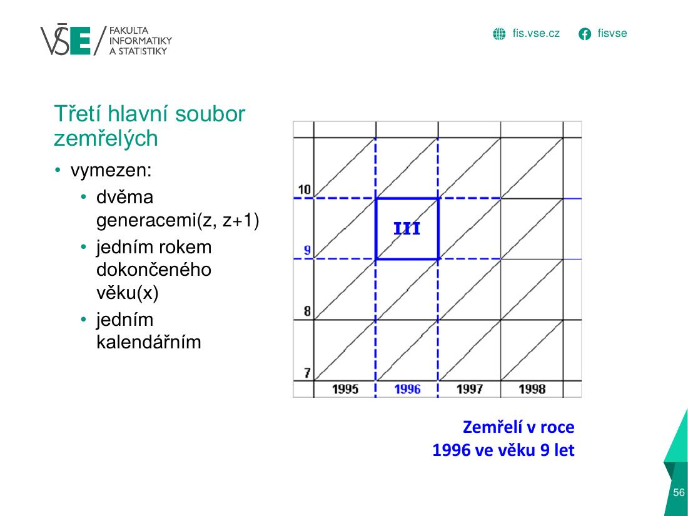

Logika: každá demografická událost má tři časové souřadnice: okamžik t (rok události, vodorovná osa), věk x (dokončený věk, svislá osa) a generaci z (rok narození, šikmé čáry života 45°). Soubor událostí je průnik pásů: vodorovný pás (věk) × svislý pás (rok) × šikmý pás (generace). Podle toho, které pásy omezuješ, vznikne čtverec, rovnoběžník, trojúhelník…
1 · Teorie a vzorce – přímo ze slidů
přednáška 2, slide 49 – Demografická síť (Lexisův diagram) – osy a čáry života.

přednáška 2, slide 53 – 1. hlavní soubor zemřelých – rovnoběžník: 1 rok narození, 1 rok věku, 2 kalendářní roky.

přednáška 2, slide 54 – 2. hlavní soubor zemřelých – trojúhelník (dvojice): 1 rok narození, 2 roky věku, 1 kalendářní rok.

přednáška 2, slide 55 – 3. hlavní soubor zemřelých – čtverec/šikmý obrazec: 2 generace, 1 rok věku, 1 kalendářní rok.
2 generace (z, z+1) · 1 rok věku (x) · 1 kalendářní rok (t)
lichoběžník / šikmý obrazec
zemřelí v roce 1996 ve věku 9 let
HES / DES (elementární)
generace, rok i věk určeny jednoznačně jedním rokem
trojúhelník
HES: z = t − x − 1 · DES: z = t − x
1. soubor průsečíků
dožívající se přesného věku x v roce t
vodorovná úsečka
dožívající se přesných 10 let v roce 2000
2. soubor průsečíků
žijící v okamžiku (1. 1.) v dokončeném věku x
svislá úsečka
žijící 10letí k 31. 12. 2002 / 1. 1. 2003
Generace: z = t − x (DES) · z = t − x − 1 (HES) · úsečka/plocha vždy kreslená od dolní hranice věku do horní hranice + 1 (věk 14 a 15 → od 14 do 16). Čas: rok t zabírá úsek od 1. 1. t do 1. 1. t+1; „31. 12. 2008“ = „1. 1. 2009“ = svislá čára u čísla 2009.
Postup při kreslení: 1) zakresli vodorovný pás věku (dokončený věk 13–14 = výška od 13 do 15), 2) svislý pás let (2006–2007 = od 2006 do 2008), 3) šikmý pás generací (z = 1996–1998 = diagonální pás mezi čarami života), 4) vybarvi průnik. Věk čti vždy od dolní hranice políčka, rok narození dopočítej odečtením věku.
Kreslítko – vyzkoušej si libovolný soubor (nebo klikni na diagramy A–G ze cvičení)
Předvolby (slidy 61–67):
Zadání diagramů A–G (z přednášky 2): A zemřelí v dokončeném věku 1 rok z generace 1990 · B zemřelí v dokončeném věku 13 a 14 let v letech 2006 a 2007 · C zemřelí v věku 0–2 roky v letech 1999–2001 z generací 1996–1998 · D zemřelí v letech 2001–2003 v dokončeném věku 22–23 let z generací 1979–1981 · E žijící ve věku 14 a 15 let k 31. 12. 2008 / 1. 1. 2009 · F dožívající se přesného věku 16 let v letech 2008–2010 · G zemřelí v roce 2009 v dokončeném věku 14–16 let z generací 1993–1995.
Tvary: A rovnoběžník · B čtverec · C trojúhelník · D šestiúhelník/lichoběžník · E svislá úsečka · F vodorovná úsečka · G pětiúhelník. V testu se hodnotí zakreslení a správná slovní specifikace obrazce.